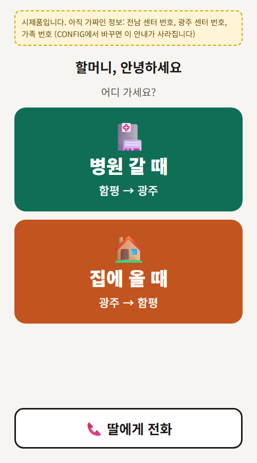
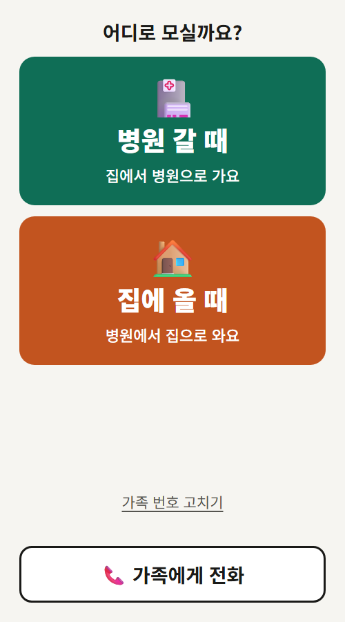

할머니의 수첩을
한 화면으로
80세가 넘은 외할머니를 위해 웹앱 '병원 택시'를 만든 과정입니다.
과제정의 → 해결안 → 검증 → 의사결정 기록 → 회고 순서로 정리했습니다.
문제할머니는 단축번호를 외우기 어려워 수첩을 보고 번호를 누르셨고 이제는 갈 때와 올 때 걸 곳까지 달라졌습니다.
→ 키나 스페이스로 다음 장면 · ? 키로 조작법아래로 넘기면 다음 장면 · 위쪽 번호를 누르면 그 장면으로 갑니다위쪽 n / 12를 누르면 장면 목록이 나옵니다
할머니는 수첩을 펼쳐
한 자리씩 누르셨습니다
한동안 할아버지 건강 문제로 할머니가 병원에 자주 다니셨습니다.
평소 할머니는 눈이 침침하시고 스마트폰 조작을 힘들어하셨습니다.
앱을 만들기 전 병원에서 보니 단축 번호도 외우기 어려워 번호를 수첩에 적어 두고 한 자리씩 누르셨습니다.
미리 말씀드리면, 앱을 만들어 드린 뒤 할머니는 병원보다 가족에게 전화할 때 더 많이 쓰셨습니다. 7번 장면
택시부터 알아봤습니다
- 알게 됨할머니가 교통약자 택시를 이용할 수 있는 대상이라는 것.
- 확인전남 센터에 물어보니 지원 대상이 맞고 이미 등록돼 있으셨습니다.
- 판단전남 센터로 귀가편까지 쓰려면 하루 전 출발 예약 전화에서 같이 등록해야 했습니다. 그런데 진료가 언제 끝날지 몰라 귀가 시간을 미리 정할 수가 없었습니다. 센터에 물어보니 귀가 시간이 바뀔 것 같으면 이용자 준수 사항 위반이 될 수 있어 안 된다는 답을 들었습니다.
- 신청출발 1시간 전에 부를 수 있는 광주 센터를 추가로 신청해 드렸습니다.
택시 문제는 풀렸지만 할머니께는 수첩에서 찾을 번호가 하나 더 생겼습니다.
갈 곳만 고르면
맞는 센터로 걸립니다
왼쪽 휴대폰은 실제 앱과 똑같이 움직이는 체험 화면입니다.
- 병원 갈 때 → 전남 센터, 집에 올 때 → 광주 센터
- 가족에게 전화 → 걸고 나면 자동으로 첫 화면
- 첫 화면에서 '뒤로' 두 번 → 앱 닫힘
휴대폰에 있는 기능부터 따져 봤습니다
| 방법 | 할머니께 어려운 점 | 갈 때·올 때 센터 구분 |
|---|---|---|
| 수첩 보고 직접 누르기 | 침침한 눈으로 한 자리씩 눌러야 함 | 직접 판단 |
| 단축번호 | 몇 번이 누구인지 외우거나 수첩을 보고 입력해야 함 | 직접 판단 |
| 연락처 즐겨찾기 | 글씨가 작고 거쳐야 할 화면이 많음 | 직접 판단 |
| 병원 택시 | 큰 글씨로, 자주 필요한 번호가 한 화면에 | 버튼에 적혀 있음 |
앱스토어 설치 없이 홈 화면 아이콘으로 열리게 했습니다.
가족 번호는 할머니 폰에만 저장합니다
코드는 누구나 볼 수 있는 공개 저장소에 있어서 가족 번호는 코드에 넣지 않고 할머니 휴대폰 안에만 저장했습니다.
버튼을 누르면 번호가 입력된 채 전화 앱이 열립니다.
앱은 할머니가 쓰시고 번호는 가족이 등록하니 설명서도 두 가지로 만들었습니다.
병원보다
가족에게 전화할 때
더 많이 쓰셨습니다
만들 때는 할아버지가 입원해 계셔서 할머니가 병원에 다니셨지만 설치해 드리기 전에 할아버지가 퇴원하셔서 병원 갈 일이 줄었습니다. 대신 수첩 없이 걸 수 있게 된 가족 전화를 주로 쓰셨습니다.
이 버튼으로 어머니께 안부 전화를 거셨을 때 저도 함께 통화했는데 고맙다는 말씀을 들었습니다.
10월 25일 외숙모가 설치해 드린 날, 할머니가 가족에게 전화해 보시고 바로 “처음으로 버튼이 어렵다”고 하셨습니다. 고쳐 달라고 하셔서 버튼을 없애고, 전화를 걸면 첫 화면으로 돌아오게 바로 고쳤습니다.
익명 버튼 기록(10월 29일부터)으로 보면 '가족에게 전화'는 11월 13일까지 30번 누르셨습니다. 병원에 가실 일은 할아버지가 퇴원하신 뒤라 아직 없었지만, 외숙모를 통해 작동 방식을 알려 드리자 '병원 갈 때'·'집에 올 때'도 직접 눌러 보셨습니다. 실제로 병원에 가실 때 쓰이는지도 같은 기록으로 확인하고 있습니다.
· 11월 2일 홈 화면 아이콘을 큰 글씨 '병원 택시'로 바꿨습니다.
· 11월 6일 Claude에게 사용성 점검을 맡겼습니다. 나온 것 가운데 할머니 화면에 필요한 것만 골라 고쳤습니다. (기록: 자세히 보기 - 흐름)
Claude에게 이렇게 말했습니다
갤럭시에서만 안 되던 것을
고치고 확인했습니다
고친 뒤에는 고치기 전 버전에서도 테스트가 실패해야 문제를 제대로 잡았다고 믿을 수 있을 거 같아 고치기 전 버전에도 돌려 보게 했습니다.
| 확인한 것 | 고치기 전 | 지금 |
|---|---|---|
| 갤럭시에서 '뒤로 두 번이면 닫힘' | 안 됨 | 됨 · 어머니 갤럭시 S22로 확인 |
| 자동 테스트 15가지 (크롬·삼성 인터넷 둘 다) | 2가지 실패 | 15가지 모두 통과 |
| 갤럭시가 건너뛰는 숨은 '뒤로' 기록 (테스트하는 동안 센 수) | 11개 | 0개 |
15가지 목록과 방법은 자세히 보기에 있습니다.
누르는 단계를 줄이고 글씨를 바꿨습니다


첫 버전은 다섯 가지 형태 가운데 고른 것입니다. 그 다섯 가지는 제가 정한 조건(큰 버튼 두 개·큰 글씨·색과 그림)으로 Claude가 만들었습니다. 아래 '딸에게 전화'는 택시가 안 잡힐 때 도움을 청하라는 AI 제안이었는데, 수첩 대신 가족 번호를 모아 거는 '가족에게 전화'로 바꿨습니다. 인사말과 지명도 빼거나 바꿨고 무엇을 왜 바꿨는지는 아래 카드에 적었습니다.
AI가 제안하고, 제가 골랐습니다
| 처음 설계 | 낸 사람 | 결과 |
|---|---|---|
| 버튼 2개, 큰 글씨, 색과 그림 | 본인 | 채택 |
| 누르면 바로 전화, 홈 화면 바로가기 | 본인 | 채택 |
| 호출하면 가족에게 문자 | 본인 | 보류 · 서버와 문자 발송 서비스가 필요 |
| 상담원에게 말할 내용(이름·주소) 화면 | AI | 뺌 · 통화 중 화면 읽기가 어려우시고, 센터가 이름을 앎 |
| '가족에게 전화' 버튼 | AI | 목적을 바꿔 채택 · AI는 택시가 안 잡힐 때용으로, 저는 수첩 대신 가족 번호를 모아두는 용도로 |
| 진료 전날 알림, 음성 연결 | AI | 하지 않음 |
Claude가 코드를 썼고 무엇을 넣고 뺄지는 제가 정했습니다. 처음 기능은 어머니께 어떨지 여쭤보고 제가 정했고 할머니가 고쳐 달라고 하신 것은 바로 고쳤습니다. 기기별 동작은 제가 어머니 갤럭시 S22로 확인했습니다.
앱과 이 포트폴리오를 마무리하면서 AI 검증에서 나온 항목 32건도 제가 하나씩 보고 바꿀지 그대로 둘지 골랐고, 그 가운데 8건을 결정 기록(전체 24건)에 남겼습니다. 결정 기록 ↗
배운 것, 놓친 것, 이어갈 것
예상 질문과 답